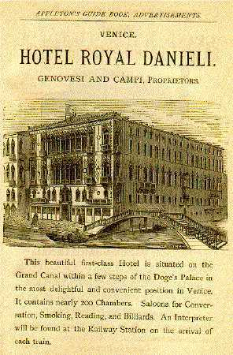

Appleton's European Guide Book for English-Speaking Travellers
(Sixteenth Edition)
(New York: D. Appleton, 1880)
|
[Updated oftener than once a year, Appleton's features many maps, city plans, illustrations and advertisements for hotels. It also includes many quotations about the landmarks of Europe, often without attribution.] |
|

[from the section on Milan] "The Last Supper," by Leonardo da Vinci, is in the former refectory of the Dominican Convent attached to Santa Maria. It has suffered much from dampness, injudicious attempts at restoration, and other ill usage. "At the time that Milan was in the possession of Napoleon, this convent was converted into barracks, and as the refrectory became a stable for the calvary horses, the already mutilated painting received still further injury. Many anecdotes are related of Leonardo da Vinci during the progress of his picture. It is said that the head of our Saviour was left unfinished; the artist, having invested the countenance of the disciple John with a beauty almost divine, shrank from portraying the mingled emotions of him whose heart was full of grief, knowing as he did that in the band of his beloved disciples there was one who had proved a traitor." "The purpose being the decoration of a refectory in a rich convent, the chamber lofty and spacious, Leonardo has adopted the usual arrangement: the table runs across from side to side, filling up the whole extent of the wall, and the figures, being above the eye, and to be viewed from a distance, are colossal; they would otherwise have appeared smaller than the real personages seated at the tables below. The moment selected is the utterance of the words, 'Verily, verily, I say unto you, that one of you shall betray me;' or rather, the words have just been uttered, and the picture expresses their effect on the different auditors. The intellectual elevation, the fineness of nature, the benign god-like dignity, suffused with the profoundest sorrow, in the head of Christ, surpassed all I could have conceived as possible in art; and faded as it is, the character there, being stamped on it by the soul, not the hand, of the artist, will remain while a line or hue remains visible. It is a divine shadow, and until it fades into nothing, and disappears into nothing, will have the lineaments of divinity...." -- Jameson. "Leonardo said that he had meditated for two whole years how best to portray on a human face the working of the perfidious heart of Judas; it is believed that he took for his model the prior of the convent, his bitter and malicious enemy." [pp. 617-18] [from the section on Rome] We have now reached the COLISEUM or the Flavian Amphitheatre. It was commence by Vespasian, on his return from his war against the Jews, continued, and dedicated by his eldest son Titus, A.D. 80, and completed by his youngest son, Domitian, who succeeded Titus. . . . The aesthetic impression is that produced by massiveness and magnitude, and is well expressed in the quotation made use of by Byron: -- "While stands the Coliseum, Rome shall stand; It is, by common consent, the grandest ruin of old Rome. The cause of its dilapidation cannot be better described than in the same writer's words: -- "Arches on arches! as it were that Rome, The arena, or space where the shows were exhibited, derived its name from the sand with which, on account of the number of wild beasts slain there, it was found necessary to strew it. Hence the word was afterwards used, not unfrequently, to denote the amphitheatre itself, and a gladiator was sometimes called arenarius. The arena was surrounded by a wall (still nearly entire) carried to a height sufficient to prevent the wild beasts from leaping over it. . . . Every nation has its vices, and cruelty seems to have been the vice of Rome. It is said, indeed, that the truly brave are never cruel; but to that assertion the Flavian amphitheatre gives the lie. "Here sat the conquerors of the world coolly to enjoy the tortures and the death of men who had never offended them;" of men -- "Spared but to die, a public spectacle, "Two aqueducts were scarcely sufficient to wash off the human blood which a few hours' sport shed in this Imperial shambles. Twice in one day came the senators and matrons of Rome to the butchery; a virgin always gave the signal for slaughter." [pp. 693-95] [from the section on Constaninople]Constantinople, called by the Turks Stamboul or Istamboul, was originally called Byzantium. . . . The city itself is built on hilly ground, and from this circumstance its numerous gardens, mosques, palaces, minarets, and towers, present a magnificent appearance from the Golden Horn. The scenery of the Thracian Bosphorus is of almost unrivalled beauty. A nearer approach to Constantinople reveals the characteristics of an Eastern town: narrow, filthy streets, and miserable houses. . . . The population of Constantinople in 1873 was 750,000, of whom about one-half were Mahomedans, one-fourth Greeks, and the rest Armenians, Franks, and Jews. . . . "It would be difficult for any imagination to associate in close array all the incongruous and discordant objects which may be contemplated in an hour's walk in Constantinople. The barbarous extremes of magnificence and wretchedness, and the majesty of nature, crowned with all the grandeur of art in contrast with the atrocious effects of unrestrained sensuality, fill up the varied picture. The howling of ten thousand dogs re-echoing through the streets all the live-long night, chases you betimes from your pillow. Approaching your window you are greeted by the rays of the rising sun, gilding the snowy summits of Mount Olympus . . ." |